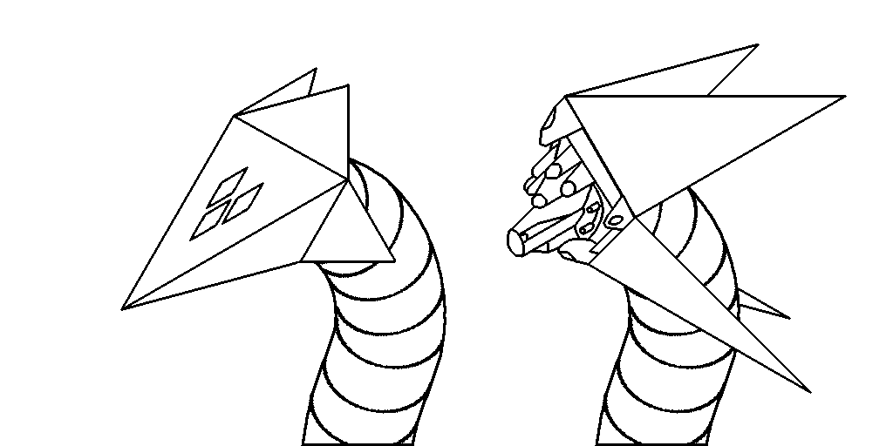

Neurology
The connections had been designed by numerous experts, and one of the intended effects was to deprive the neurons of any way to tell that what they are interacting with is not a part of the same brain. In result, there are many neural circuits that had developed naturally, which span across parts of two or three different brains as if they were just one brain forming connections within itself.
The emotional centers of the brains had been wired together particularly extensively as to ensure that their feelings and opinions don't diverge. They are fully aware of each other's emotions but still able to feel differently to some degree, giving soica as a whole the combined emotional processing capacity of three humans, avoiding the common problem of composite minds where opinion formation and emotional processing becomes the bottleneck.
This makes Soica a unique case of an upscaled mind implemented in organic substrate, which requires a mere few tens of watts of food energy to run, enabling great mobility.
There is not a safe pathway to separating the brains without doing massive amounts of psychological and neurological damage, especially due to the optimization the brains had engaged in such as at least one of them having completely repurposed its verbal processing skill to other problems that benefit from this kind of processing.
Personality and notable mental traits
He displays a particular kind of thirst for adventure that coupled with his other personality traits could potentially develop into either a hero complex or a martyr complex with vigilantism if not managed. There is also an apparent need to be found disturbing by others, which doesn't seem to serve a clear purpose such as establishing hierarchy but rather just enjoying the fact of being found disturbing or potentially scary. The management strategy of choice, which appears to be sufficient, is to simply engage with immersive fiction through virtual reality where various urges can be acted upon safely.
Under Torpensoor's influence, he had become a lot more open to building social relations with the expectation of them lasting a meaningfully long time. Many avoidant behaviours had been removed with the help of engram removal therapy and conditioning towards relatively high openness to showing empathy and discussing uncomfortable emotions.
Body

The structural parts of his body are primarily made of 7034 Aluminium alloy, making it very lightweight. If combat is expected, additional armour plating is added since the bare aluminium body is both not optimal for ballistic resistance and difficult to replace when damaged. In some ways he is like a crab, with a hard shell and a soft interior. A surprising number of internals are organic as a merit of their low power requirements - both food and electricity are necessary for him to remain functional. Electrical charge is stored in a set of advanced aluminium-ion batteries with high specific energy, meanwhile bio-available energy is stored mostly in engineered sugar tissues that skip the metabolic inefficiencies of fat, some natural fat tissue is also present but plays a much smaller role.

His head carries most of the sensors on his body, including a central hyperspectral camera. 4 plates can close up on it to protect the sensor nest when there is danger, in which case the only way to see is through two sets of 3 cameras on each side of the head, which line up with transparent segments on the protective plates.Origins
The development was not welcomed well at all by the families of each one, but they apparently did not consider that an issue and simply cut off contact.
[unexplained gap in the backstory, I'll need to fill this in later]
Apparently emboldened by their expanded cognitive capabilities and slight personality changes resulting from the brains rewiring themselves against one another, Soica departed to an undisclosed location in the Kuiper Belt to take on bounty hunting as a way to gain extra wealth relatively quickly.
[another gap where very rich but bad things happened] Despite their criminal status, Soica eventually broke off from the mercenary groups they had been working with in an apparent mission to help as many people as possible, either directly or by hunting down bandits and oppressors keeping their communities dangerous. Although it earned them good will with a few localities, it put them in a situation where they had neither the backing of law nor the support of organized crime groups. They eventually opted to stop their vigilantism and focus on leaving while still alive instead.
Soica eventually ended up pleading with Torpensoor for a way out of their criminal history, which came at a very attractive price of merely undergoing mandatory rehabilitation. Soica agreed to a conditioning process involving some direct neurological intervention as a means to change their behaviour and drastically reduce chance of returning to criminal activities in the future. This process is still ongoing.
Soica's unique position as a composite mind running entirely on low-power organic substrate could make them an asset for Torpensoor's power projection.